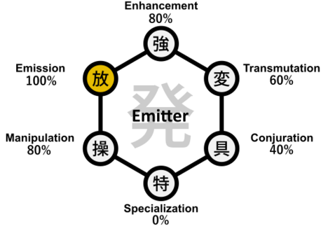

Hunter X Hunter
Emitter Nen Type
Emitters excel at projecting aura away from the body. This enables ranged techniques, high-speed shots, or dispersed effects that travel.

Key Characteristics of Emitters
- Ranged projection of aura with strong control.
- Often favors rapid-fire or burst damage styles.
- Requires precision and timing for effectiveness.
Video Overview
Enhancers rely on mental discipline to maintain and enhance their physical abilities, making them formidable opponents in direct confrontations.
Understanding Enhancer abilities is essential to grasp the fundamentals of Nen combat in Hunter x Hunter.